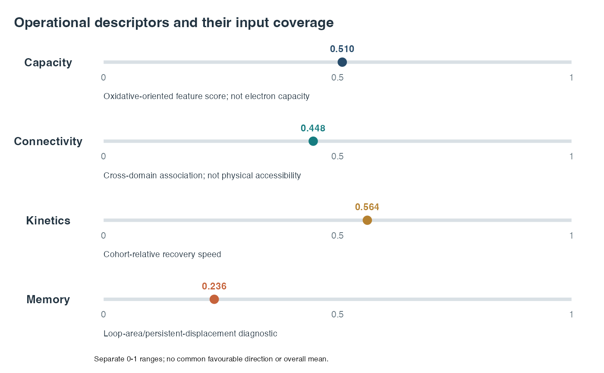

Displays available diagnostic summaries labelled Capacity, Connectivity,
Kinetics and Memory. The composite RRI is not an axis: it is built from
the plant, soil and microbial domains rather than from these four
properties, so averaging across it is not defensible. These axes are
operational descriptors returned by rri_property_scores;
they are not direct measurements or identified estimates of the theoretical
mechanisms bearing the same names.
plot_rri_properties(
props,
rri_value = NULL,
group_list = NULL,
fill_alpha = 0.2,
colours = c("#1A3A5C", "#E07B39", "#2E7D32", "#7B3294", "#B2182B"),
show_values = TRUE,
title = "Operational descriptors and their input coverage",
base_size = 10,
type = c("profile", "radar"),
rec = NULL,
notes = NULL
)A list returned by rri_property_scores, or a
named numeric vector with elements Capacity, Connectivity,
Kinetics, Memory (values in [0, 1]).
Optional numeric. Composite RRI, reported in the subtitle
for reference. It is not plotted as an axis and does not enter
any average across property axes; no such average is calculated.
Defaults to props$rri_summary if available.
Optional named list of property score vectors, one per group (e.g., per thaw stage or treatment). If supplied, multiple groups are displayed in separate panels.
Numeric in [0, 1]. Polygon fill transparency.
Character vector of polygon outline/fill colours, recycled across groups.
Logical. Annotate each axis tip with the numeric score.
Character. Plot title.
Numeric. Base font size.
Display type: separate-axis dot profile (default), or an explicit radar display for compatibility. Radar area is not a quantitative summary.
Optional recovery table for data-derived coverage notes; use only the same recovery table used to calculate props. With multiple groups supply explicit notes instead.
Optional named character vector (one note per property), or a named list of such vectors matching group_list. Describes score provenance.
A ggplot object.
The default profile displays each descriptor separately, without an overall
mean or a common favourable direction. Missing values are labelled explicitly.
Out-of-range finite scores and infinite values are rejected, not clipped.
The optional radar chart uses Cartesian coordinates constructed with ggplot2; no
external radar-chart package is required. Each available axis runs from 0
(centre) to 1 (rim). Polygon area has no quantitative meaning, and axes based
on different transformations are not necessarily commensurable.
Axis meanings:
Capacity — oxidative-oriented soil feature composite; not accessible capacity unless the caller calculates and supplies it explicitly.
Connectivity — association or network-topology descriptor; not demonstrated electron transfer.
Kinetics — cohort- or timescale-relative recovery-speed descriptor; not a mineral exchange rate.
Memory — loop-area and persistent-displacement descriptor; not an identified causal memory state.
sim <- simulate_redox_holobiont(
n_plot = 3, n_depth = 2, n_plant = 3, n_time = 14,
p_micro = 30, seed = 99
)
res <- rri_pipeline_st(
ROS_flux = sim$ROS_flux,
Eh_stability = sim$Eh_stability,
micro_data = sim$micro_data,
id = sim$id,
reducer = "per_domain",
scaling = "pnorm"
)
#> Warning: Unanchored latent axes have arbitrary signs; RRI is exploratory, not directionally validated resilience.
#> Warning: Excluding simulator-derived hidden columns from scoring: Cacc_EAC, Cacc_EDC, Cacc_total, Cacc_fraction, net_oxidative_balance, alpha_accept, alpha_donate, k_accept_h, k_donate_h
rec <- rri_recovery_metrics(
res = res,
id = sim$id,
time_col = "time",
group_cols = c("plot", "depth", "plant_id"),
perturb_start = 5,
perturb_end = 8
)
props <- rri_property_scores(
res = res,
rec = rec,
soil_df = sim$Eh_stability,
eac_col = "EAC",
edc_col = "EDC",
humic_col = "dissolved_organic_matter_redox"
)
plot_rri_properties(props)
